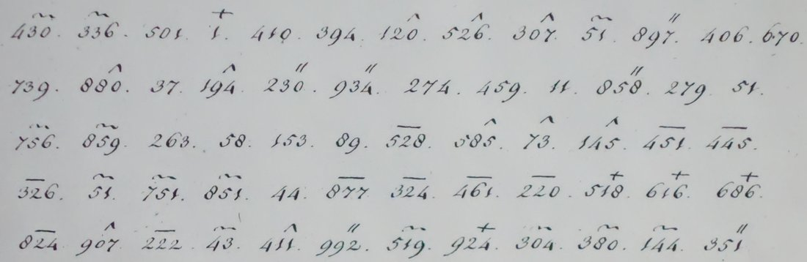

. Wikimedia Commons, public domain.")


01 The letter and its code
DECODE’s cataloguer notes that a cipher clerk seldom wrote in his own name to an envoy, and that such a short message “can only pertain to matters of encryption”. The date fits: six days later, on 5 August 1803, the ministry signed a new and much larger codebook for the St Petersburg legation (DECODE R1035). Hogendorp’s own ciphered dispatches of 5 July 1803 (R1942) were written in the older code, the one Toulon uses here.
The code has six series of numbers from 1 to 992: unmarked, and marked with a wave, a caret, a double stroke, a bar or a plus. The same number under a different mark is a different word. The 1801 solutions show that common words have several equivalents (Heer is 453̅ and 370~), and that the words in each series are not in alphabetical order (in the wave series 297 is Men, 370 Heer, 500 dat, 580 de, 733 zeer). A number therefore says nothing about the word it stands for, and without the book only a word already seen in a solved letter can be read.
The transcription was checked against the image at full zoom. Ten groups differ from the first transcription of 20 September: 336~, 897″, 880^, 859~, 528̅, 145^, 616+, 215̅, 625̅ and 188̅.
02 The 1801 letters in the same code
The key’s annotation says it was used “in anno 1801” with the Batavian ministers abroad. Three dispatches of the chargé d’affaires Étienne Bourdeaux from Berlin survive with their solutions:
- R1946 (no. 20, 7 February 1801): 202 groups against a 158-word solution that opens “De Heer van Haugwiz en de Heer van Krudner, die intime vrienden zijn, zyn zeer en peine over het envoy van Kalitscheff naar Parys”. After the start control 357″ it runs strictly one group per word as far as niet (word 150). That fit is confirmed where 153̅ falls on Paul and 222̅ on niet.
- R1944 (no. 16, 31 January 1801; its solution is misfiled as R1946’s third image): 115 groups against 77 words. The subject is a stolen cipher. Rosencrantz believes a servant copied his cipher, the bureau that held it was broken into, and a courier is being sent to St Petersburg with a new one. 927+ is Cyffer three times, but two runs of the cipher have no counterpart in the solution.
- R1945 (3 February 1801): 187 groups against 152 words. The alignment drifts, so no value can be fixed from it.
Every group of R2034 was looked up in all three, and in Hogendorp’s unsolved R1942. A value counts only if the number and the mark both match:
| Group | Word of R2034 | Value | From | Grade |
|---|---|---|---|---|
| 394 | 5 | handen | R1946, word 111 | H |
| 58 | 28 | brengen | R1944, its last word | M |
| 222̅ | 51 | niet | R1946, word 150 | H |
| 934″ · 907^ | 18 · 50 | wonderlijk · zoo | Sillem’s paraphrase of R1942 | I |
Three padding groups also turn up in R1946 (205̅ gantschelyk, 458+ ook, 239″ antwoord). This confirms the code is the same but adds nothing to the text. J. A. Sillem’s 1890 biography of Hogendorp quotes “zo wonderlijk” from the ciphered dispatch no. 12 of 5 July 1803. The adjacent pair 907^ 934″ in R1942 is a plausible match, but nothing in the print fixes where the phrase falls, so the pair is kept only as a conjecture.
03 What was tried and ruled out
- The nine values of the first pass. The 20–21 September pass put 51~ = van, 279 = en, 153 = Paul, 43~ = zyne, 304~ = wegens and 380~ = de. It took them from partial alignments of R1944 and R1946 that were never saved as transcriptions. The full transcriptions do not contain those groups where the table put them. In R1946 van is 444̅ or 957~ and wegens is 564~. Paul is 153̅ with a bar, while R2034’s 153 has none. These values are withdrawn.
- The 5 August 1803 codebook, R1035. Van Kampen’s reconstruction (HistoCrypt 2026) has 1,849 entries in seven series. R2034 was decoded with every assignment of its five marks to R1035’s six. The best assignment gives no more hits than random marks do (22% of groups under the natural mapping, 28% at random), and the words it produces do not connect. Its one striking run, “met Zijne Keizerlijke Majesteit”, is a single phrase entry between two empty cells. Hogendorp’s R1942 of 5 July is also at chance against R1035, as it should be for a dispatch written a month before that book.
- The 1765 St Petersburg key, R1038, and Schimmelpenninck’s key, R1891 (Croiset papers inv. 34312). R1038 has no entry for niet, handen or brengen. Both mark single digits rather than whole groups, so they belong to different systems.
- The other Batavian records on DECODE. R1926 (Schimmelpenninck, London, 28 February 1803) and R1896 use digit marks. R1947 and R2053 (Van Dedem, 1789) use four-digit groups. R1033 (Six van Oterleek, 1808) is in the R1035 book. None is in this code.
- Print. Sillem’s Dirk van Hogendorp (1890), the 1943 edition of Hogendorp’s letters to his brother, Colenbrander’s Gedenkstukken IV, Tomokiyo’s Cryptiana and Van Kampen’s paper give no decipherment of this letter.
04 What remains open
- 64 of the 67 text groups. None occurs in the solved 1801 letters, and a non-alphabetical, homophonic word code this short cannot be rebuilt from context.
- The book itself: Nationaal Archief 2.21.045 (Croiset), inv. 34313, old no. 5187. It is a ten-page booklet with six written pages and six loose sheets of notes, held as a photocopy; the original, Museum voor Communicatie B1 392, is also described at NA 2.21.227/335. A scan of it would read R2034, and R1942 and Hogendorp’s other 1803 dispatches with it.
05 Sources
- Nationaal Archief, 1.02.13 Legatie Rusland, inv. 208; DECODE R2034 (login).
- Nationaal Archief, 2.01.08 Buitenlandse Zaken 1796–1810, inv. 257 and 318; DECODE R1944, R1945, R1946, R1942.
- Nationaal Archief, 2.21.045 (Croiset), inv. 34313, and 2.21.227, inv. 335: the Correspondentiecijffer.
- DECODE R1035, R1038, R1891 (keys); F. van Kampen, “The Codebook of Willem Six van Oterleek”, HistoCrypt 2026, with its reconstructed nomenclator.
- J. A. Sillem, Dirk van Hogendorp (1761–1822) (Amsterdam, 1890), pp. 151–153.
Transcriptions of R2034, R1944, R1945 and R1946, the alignments and the notes: toulon1803/.